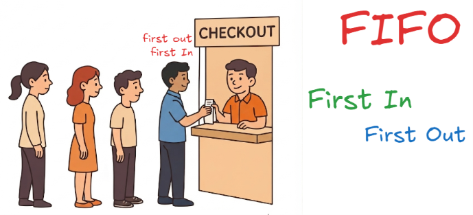

Queue
A queue stores elements in FIFO order — first in, first out. Elements are added at the back and removed from the front, like a line of people waiting.

How a queue works
A queue uses two ends instead of one. This is the opposite of a stack: the first element you add is the first one you get back.
Elements move through the queue in the order they arrived.
The operations
All the operations are O(1). Note that in C++ the methods are called push and pop, not enqueue and dequeue.
Click to expand
| Operation | Also called | What it does | Complexity |
|---|---|---|---|
| push(x) | enqueue | Add x at the back | O(1) |
| pop() | dequeue | Remove the front element | O(1) |
| front() | — | Read the first element | O(1) |
| back() | — | Read the last element | O(1) |
| empty() | — | True if the queue has no elements | O(1) |
| size() | — | Number of elements | O(1) |
Like the stack, pop() removes the front element but does not return it. Read it with front() first, then call pop(). Calling either on an empty queue is undefined behavior.
Filling a queue
The standard queue lives in <queue>. Elements come out in the same order they went in.
Click to expand — declaring and filling
Declaring a queue
#include <iostream>
#include <queue>
using namespace std;
int main() {
queue<int> q; // queue of ints
queue<string> names; // queue of strings
}Filling it one by one
queue<int> q;
q.push(10);
q.push(20);
q.push(30);
cout << q.front(); // 10 — the first one pushed
cout << q.back(); // 30 — the last one pushed
cout << q.size(); // 3Filling it from an array
int arr[5] = {1, 2, 3, 4, 5};
queue<int> q;
for (int i = 0; i < 5; i++) {
q.push(arr[i]);
}
cout << q.front(); // 1 — the first element of the arrayDisplaying a queue
Same problem as the stack: there is no loop over the elements. To print everything you have to pop, which empties the queue.
Click to expand — the destructive way and the safe way
Popping everything
Taking the parameter by value makes a copy, so the caller keeps its queue.
void display(queue<int> q) { // a COPY, not a reference
while (!q.empty()) {
cout << q.front() << " "; // read the front
q.pop(); // then remove it
}
cout << endl;
}
int main() {
queue<int> q;
q.push(10); q.push(20); q.push(30);
display(q); // 10 20 30
cout << q.size(); // 3 — the original is untouched
}Keeping the elements
A queue can be rotated: pop from the front and push straight back. After size() rotations everything is back where it started.
void display(queue<int>& q) {
int n = q.size();
for (int i = 0; i < n; i++) {
cout << q.front() << " ";
q.push(q.front()); // put it back at the end
q.pop(); // remove it from the front
}
}Store q.size() in n before the loop. Using q.size() as the condition would never end, because the queue keeps the same size while you rotate it.
Reversing a queue
A queue cannot reverse itself, because both of its ends work in the same direction. A stack does the job: empty the queue into a stack, then empty the stack back into the queue.
Click to expand
#include <queue>
#include <stack>
using namespace std;
void reverse(queue<int>& q) {
stack<int> s;
// queue -> stack (this reverses the order)
while (!q.empty()) {
s.push(q.front());
q.pop();
}
// stack -> queue
while (!s.empty()) {
q.push(s.top());
s.pop();
}
}
// 1 2 3 4 -> 4 3 2 1This is the standard trick whenever you need the reverse of a FIFO order. Time O(n), space O(n) for the stack.
Types of queue
Four variants come up regularly. They all keep the FIFO idea but change what you are allowed to do at each end.
Click to expand — simple, circular, deque, priority
1. Simple queue
The one above. Push at the back, pop at the front, nothing else.
2. Circular queue
Made for an array implementation. In a plain array queue, popping moves the front index forward and the space at the start is wasted — after a few pushes and pops the queue looks full while the beginning of the array is empty.
A circular queue fixes this by wrapping the indices back to 0 with the modulo operator.
The array is treated as a ring, so no space is wasted.
class CircularQueue {
private:
int data[8];
int front, rear, count;
public:
CircularQueue() : front(0), rear(-1), count(0) {}
bool empty() { return count == 0; }
bool full() { return count == 8; }
void push(int x) {
if (full()) return;
rear = (rear + 1) % 8; // wrap back to 0 after 7
data[rear] = x;
count++;
}
void pop() {
if (empty()) return;
front = (front + 1) % 8; // wrap back to 0 after 7
count--;
}
int getFront() { return data[front]; }
int size() { return count; }
};% 8 is what makes it circular. Keeping a separate count is the simplest way to tell a full queue from an empty one — in both cases front and rear sit next to each other.
3. Deque (double-ended queue)
A deque lets you push and pop at both ends. It can act as a queue, as a stack, or as both at once.
Four operations instead of two — both ends are open.
#include <deque>
using namespace std;
deque<int> dq;
dq.push_back(20); // 20
dq.push_back(30); // 20 30
dq.push_front(10); // 10 20 30
cout << dq.front(); // 10
cout << dq.back(); // 30
dq.pop_front(); // 20 30
dq.pop_back(); // 20
cout << dq[0]; // 20 — a deque also supports indexingUnlike queue and stack, a deque can be looped over normally:
for (int x : dq) {
cout << x << " "; // no popping needed
}std::queue and std::stack are built on top of std::deque by default — they just hide the operations you are not supposed to use. If you need to display a container often, using a deque directly is easier.
4. Priority queue
Elements come out by priority instead of arrival order. In C++ the largest value comes out first by default.
#include <queue>
using namespace std;
priority_queue<int> pq; // max-heap: biggest first
pq.push(30);
pq.push(10);
pq.push(50);
cout << pq.top(); // 50 — not 30
// smallest first
priority_queue<int, vector<int>, greater<int>> minPq;
minPq.push(30);
minPq.push(10);
minPq.push(50);
cout << minPq.top(); // 10A priority queue uses top(), not front(). It is built on a heap, so push and pop are O(log n) instead of O(1).
Comparison
| Type | Add | Remove | Order out | Header |
|---|---|---|---|---|
| Simple queue | back | front | Arrival order | <queue> |
| Circular queue | back (wraps) | front (wraps) | Arrival order | manual |
| Deque | both ends | both ends | Your choice | <deque> |
| Priority queue | anywhere | top | By priority | <queue> |
Building your own queue
The linked list version is the simplest one to write, because it needs no wrapping and has no size limit.
Click to expand
Two pointers are kept: front for removing and rear for adding. Both operations stay O(1) because neither one has to walk the list.
struct Node {
int data;
Node* next;
Node(int x) : data(x), next(nullptr) {}
};
class Queue {
private:
Node* front;
Node* rear;
int count;
public:
Queue() : front(nullptr), rear(nullptr), count(0) {}
bool empty() { return front == nullptr; }
void push(int x) {
Node* newNode = new Node(x);
if (empty()) {
front = rear = newNode; // first element: both ends
} else {
rear->next = newNode; // link it after the last one
rear = newNode; // it becomes the new last
}
count++;
}
void pop() {
if (empty()) return;
Node* temp = front;
front = front->next;
if (front == nullptr) rear = nullptr; // the queue is now empty
delete temp;
count--;
}
int getFront() { return front->data; }
int size() { return count; }
};When the last element is removed, rear must be set to nullptr as well. Forgetting it leaves rear pointing at freed memory, and the next push writes through a dangling pointer.
Where queues are used
Any time things must be handled in the order they arrived.
Click to expand
| Use | How the queue helps |
|---|---|
| Breadth-first search | Holds the nodes to visit, level by level |
| Task scheduling | Jobs run in the order they were submitted |
| Print queue | Documents print in the order they were sent |
| Buffering | Data is read at the speed it arrived |
| Priority queue | Dijkstra's algorithm, event simulation |
| Deque | Sliding window problems, undo with a size limit |
BFS is the clearest example — the queue is what makes the search go level by level:
void bfs(Node* root) {
if (root == nullptr) return;
queue<Node*> q;
q.push(root);
while (!q.empty()) {
Node* current = q.front();
q.pop();
cout << current->data << " ";
if (current->left) q.push(current->left);
if (current->right) q.push(current->right);
}
}Swap the queue for a stack in that code and the traversal becomes depth-first. The structure you choose decides the order of the search.